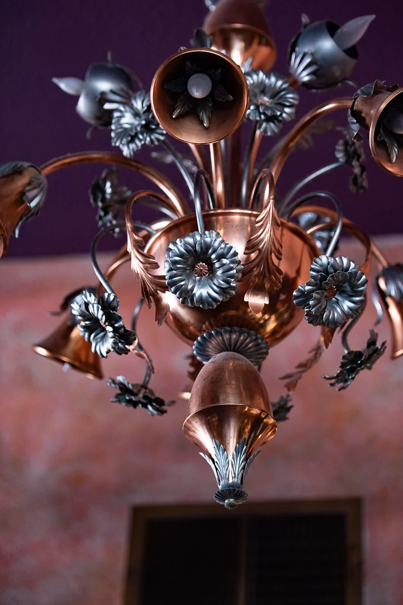
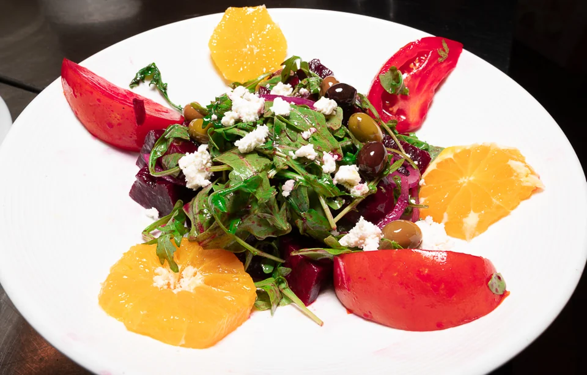
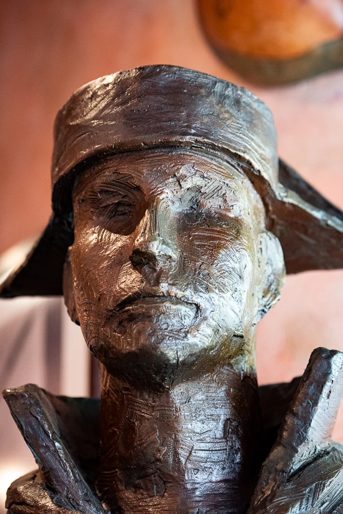
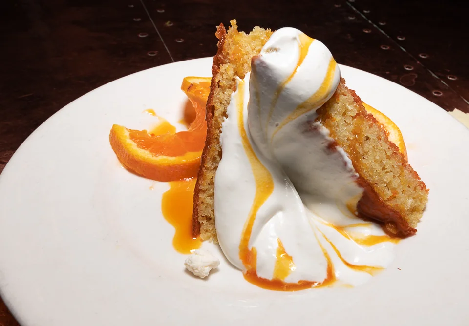
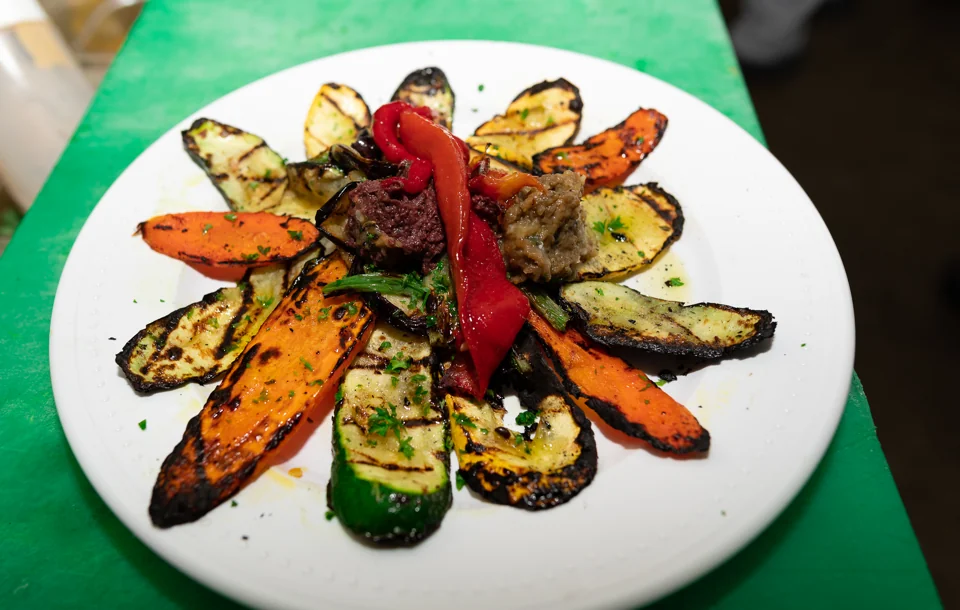
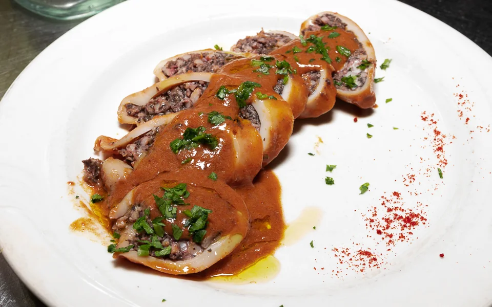

Inside
the bodega.
Every corner has a little character.
Take your time looking around.








Your corner of SacramentoL Street.
L Street.
Spanish soul.
1800 L Street
Midtown Sacramento, CA 95811
Come on over.
- Monday–Saturday
- 11 am–10 pm
- Sunday
- 3 pm–9 pm
For a table, a question, or a special occasion,
give us a call.